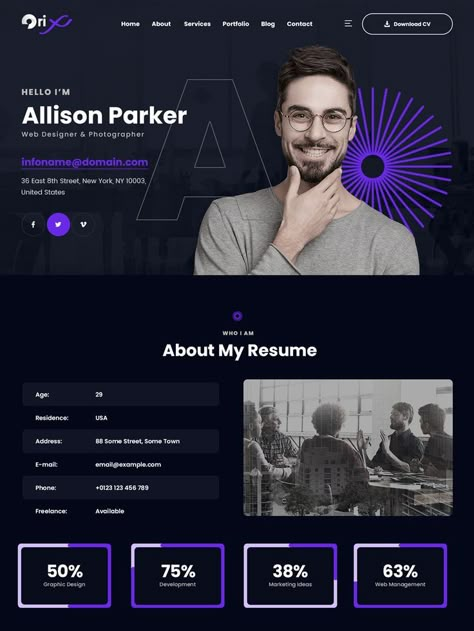

Este portfolio me inspiró en la combinación de colores,
en los botones interactivos y en la manera en la que la
información está arreglada en secciones que no se confunden
(separadas). Además, también me ayudó a armar lo que quería poner
en la información debajo de la imagen y a acomodar el formulario del final
y el cuadro de datos que está a su lado.
Este portfolio me ayudó a imaginar cómo quería tener la primera sección,
la cual contiene una imagen sobre mí y un pequeño texto o mensaje con mi
Gmail y mi rol de estudiante.
Este portfolio me dio la idea sobre el cuadro de datos del final y también
las partes pequeñas interactivas de la página, como cuadros que cambian de color,
textos que también cambian y la idea de agregar el carrusel con el que ya trabajamos.

Y por último, me inspiré en esta imagen que vi por Google para hacer
la paleta de colores oscuros y el cuadro de "Sobre mí" y la pequeña
descripción que hay al inicio debajo de mi foto.
Bueno, todo. Quería tener una paleta de colores llamativos pero que a la vez
se complementaran entre sí, entonces elegí mi color favorito (violeta) y empecé
a poner una tonalidad diferente en varias partes y en otras iguales. Por ejemplo,
el header, el footer, los cuadros con texto y el formulario tienen la misma tonalidad
porque son lo que más importa de la página. Después están los títulos de los datos,
que también los ordené y puse otros tonos para que resalte el subtítulo de cada sección.
También decidí el cambio de colores al interactuar con los textos o cuadros.
Intenté crear un carrusel como el que hicimos en la última clase y utilicé
el tipo de letra que me pareció más serio. Además, decidí juntar las habilidades
y herramientas con otro cuadro con más información resumida.
Aprendí que algunas cosas no van a salir perfectas por más que lo intentes
y modifiques (por el tamaño del carrusel jakdjakds).
Descubrí que puedo hacer más de lo que quería. Mi parte favorita es el inicio
con la imagen y el cuadro de Sobre mí. Pensé que iba a quedar horrible,
pero me gustó el resultado.
También descubrí varias cosas, como para qué sirve margin-bottom y top,
cómo puedo usar el :hover, la idea del formulario que funciona y lo fácil
que se hace todo cuando usás :root para los colores.
Lo más difícil fue el carrusel. Estuve casi una hora intentando que quedara
centrado y que las capturas se vieran bien.
También se me dificultó cambiar las clases porque reutilicé código de mi página anterior.
No cambiaría nada de la página, quizás le agregaría más información,
pero sería muy pesado para mi gusto.
Me entretuve mucho haciendo esto y lo volvería a hacer otra vez.
Eso es todo jijiji.